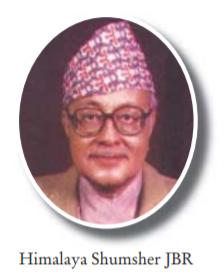

Biography:
Himalaya Shumsher JBR was born on 10 January, 1928. He was the first governor of Nepal.
Nepal Rastra Bank was also established during his tenure. He was the governor from
April 26, 1956 to February 7, 1961 during the ruling period of King Mahendra.
At that time notes were issued as a MORU. Signature of Himalaya Shumsher JBR
can be seen on the currency notes of Moru 1, Moru 5, Moru 10 and Moru 100.